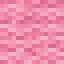
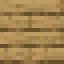
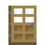

Alle drie de Guhhuisjes staan erin: klein, medium en groot.
Used inGebruikt in
Huisjes need the bouwboekje nowHuisjes hebben nu het bouwboekje nodig
The three guhhuisje recipes need the Bouwboekje van de Timmerguh in the crafting grid. It stays in the grid (like a bucket of milk gives its bucket back), so one bouwboekje builds as many huisjes as you like. Huisjes that are already placed keep working; even if you already had huisjes, you do the quest once to get the book. (The small huisje moved the book into its empty top slot; the big one has one pink wool less.)
Hebben de drie guhhuisje-recepten het Bouwboekje van de Timmerguh in het werkbankrooster nodig. Het blijft in het rooster liggen (zoals een emmer melk zijn emmer teruggeeft), dus met een bouwboekje bouw je zoveel huisjes als je wilt. Huisjes die al staan blijven gewoon werken; had je al huisjes, dan doe je de quest een keer om het boekje te krijgen. (Het kleine huisje heeft het boekje in zijn lege bovenste vakje; het grote heeft een roze wol minder.)
Guhhuisje (klein)Guhhuisje (klein)


